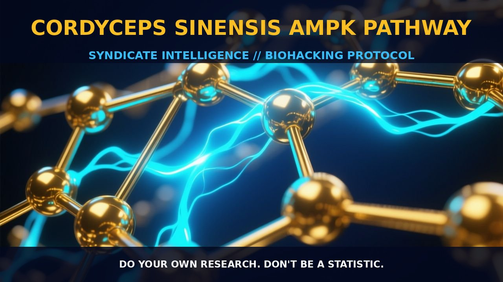

Cordyceps Sinensis and the AMPK Pathway: Unlocking Metabolic

1. The Mechanism
Cordyceps sinensis, a traditional Chinese medicinal mushroom, has garnered significant attention for its potential health benefits, particularly in the context of metabolic and inflammatory disorders. The primary active compound in cordyceps sinensis is cordycepin, a nucleoside that exhibits a range of biological activities.
Cordycepin's mechanism of action is closely tied to the activation of the AMP-activated protein kinase (AMPK) pathway. This pathway is a central regulator of cellular energy homeostasis and plays a crucial role in metabolic signaling. When activated, AMPK phosphorylates and activates downstream targets such as acetyl-CoA carboxylase (ACC) and glycogen synthase kinase 3β (GSK-3β), leading to a cascade of metabolic and signaling events that promote energy conservation and enhance cellular resilience.
Cordycepin's ability to activate AMPK provides a critical biological leverage, facilitating its protective effects against metabolic stress and inflammation. AMPK activation by cordycepin involves several key steps. Initially, cordycepin binds to and activates AMPK in a concentration-dependent manner. This activation leads to increased phosphorylation of AMPK at the Thr172 residue, which is a hallmark of AMPK activity. The phosphorylation of AMPK subsequently triggers a series of downstream events, including the phosphorylation of ACC and the inhibition of mTOR, a key regulator of cell growth and proliferation. These downstream effects contribute to the suppression of lipogenesis and protein synthesis, thereby reducing cellular stress and promoting metabolic efficiency. Additionally, cordycepin's activation of AMPK can modulate other signaling pathways, such as the MAPK and PI3K/Akt pathways, which are implicated in cellular stress response and survival.
2. Biological Leverage
The activation of the AMPK pathway by cordycepin confers a wide range of biological benefits. One of the primary benefits is the reduction of hepatic steatosis, inflammation, and fibrosis, as observed in studies on nonalcoholic steatohepatitis (NASH). NASH is a serious condition characterized by excessive accumulation of fat in liver cells, accompanied by inflammation and fibrosis. Cordycepin's activation of AMPK leads to the phosphorylation of downstream targets, such as ACC and GSK-3β, which inhibit lipid synthesis and promote the breakdown of fatty acids. This results in a reduction of lipid accumulation in hepatocytes and a decrease in serum aminotransferases, which are markers of liver damage.
Moreover, cordycepin's modulation of the AMPK/mTOR pathway has significant implications for kidney and lung health. In acute kidney injury (AKI), the activation of AMPK promotes autophagy, a process that helps in the removal of damaged cellular components and enhances cellular resilience. By activating AMPK, cordycepin can mitigate the inflammatory and oxidative stress associated with AKI, thereby reducing the risk of acute lung injury (ALI). The activation of AMPK also leads to the inhibition of mTOR, which is a key regulator of protein synthesis and cell growth. This inhibition can help to reduce the metabolic burden on the kidneys, promoting recovery and reducing the risk of further injury.
In addition to its effects on metabolic and inflammatory pathways, cordycepin's activation of AMPK has been shown to have neuroprotective effects. AMPK activation has been linked to the prevention of neurodegenerative diseases such as Alzheimer’s and Parkinson’s, as it regulates the production of energy in brain cells and prevents oxidative stress. By enhancing AMPK activity, cordycepin can support cognitive function and reduce the risk of neurodegenerative conditions. Furthermore, cordycepin's ability to activate AMPK may also contribute to its anti-aging effects, as observed in studies on d-galactose-induced aging rats. The activation of the AMPK/SIRT1 pathway has been shown to enhance cellular resilience and promote longevity.
3. Protocol Implementation
In practical implementation, the use of cordycepin for activating the AMPK pathway can be tailored to specific health goals. For individuals with metabolic disorders such as NASH, a daily dose of cordycepin in the range of 100-200 mg can be effective in reducing hepatic steatosis and inflammation. This dosage range should be adjusted based on individual response and can be taken with meals to enhance absorption. The timing of administration is crucial, as AMPK activation is more pronounced during periods of metabolic stress, such as after meals or during physical activity.
For those focusing on kidney and lung health, cordycepin can be taken in conjunction with other supportive compounds such as rhodiola rosea, which enhances energy and alertness, and has shown promise in reducing fatigue and supporting cognitive function. The combination of cordycepin and rhodiola rosea can be particularly beneficial in managing metabolic and inflammatory stress in the kidneys and lungs. Additionally, stacking cordycepin with other AMPK activators, such as berberine or metformin, can enhance the overall AMPK signaling cascade, providing a synergistic effect on metabolic health.
It is important to note that while cordycepin has shown promise in activating the AMPK pathway and providing various health benefits, the optimal dosage and timing may vary based on individual factors. Regular monitoring of liver enzymes and kidney function can help in adjusting the dosage and ensuring that cordycepin is effective in managing metabolic and inflammatory disorders. As with any biohacking regimen, consistency and individualized approach are key to achieving optimal results.
Prostar Life Hack
For individuals with metabolic disorders such as NASH, a daily dose of 100-200 mg of cordycepin taken with meals can effectively reduce hepatic steatosis and inflammation. Timing administration after meals enhances AMPK activation during periods of metabolic stress, promoting cellular resilience and metabolic efficiency.
[ AUTHOR: LEAD TECHNICAL RESEARCHER ]